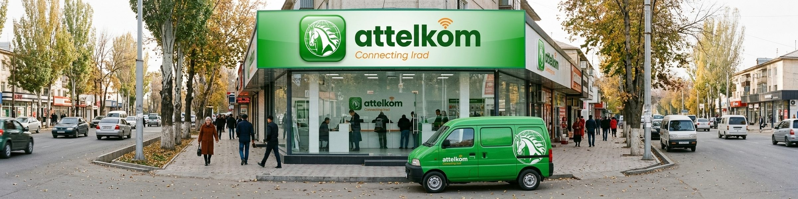
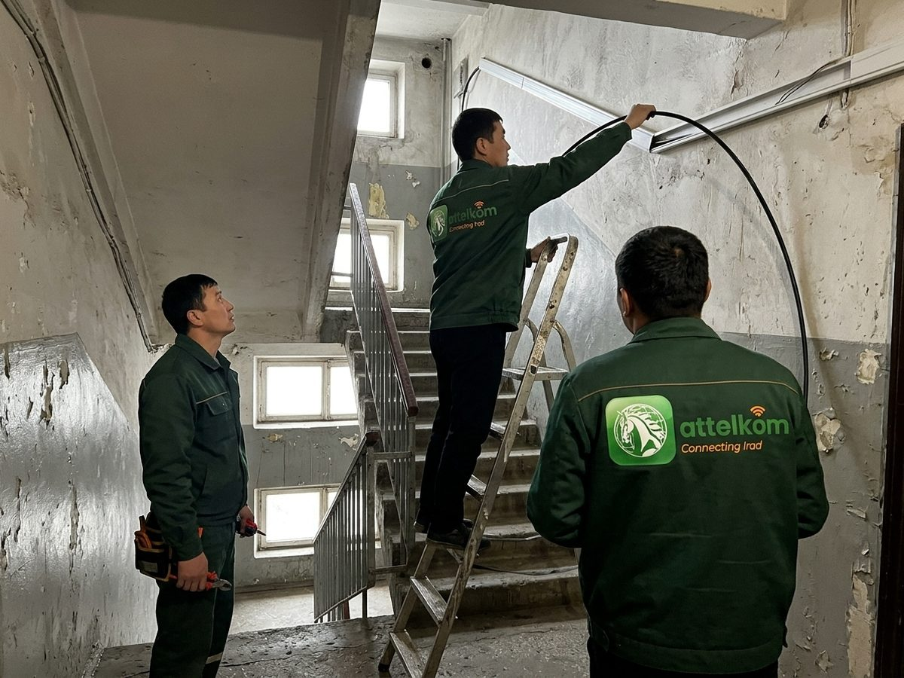
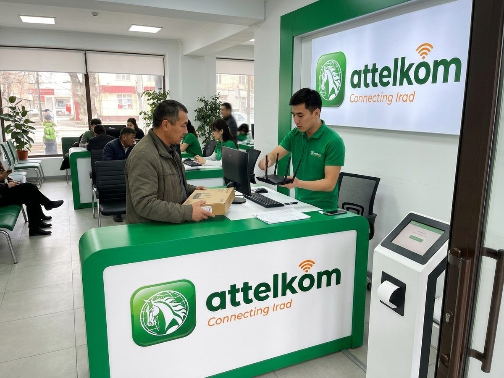
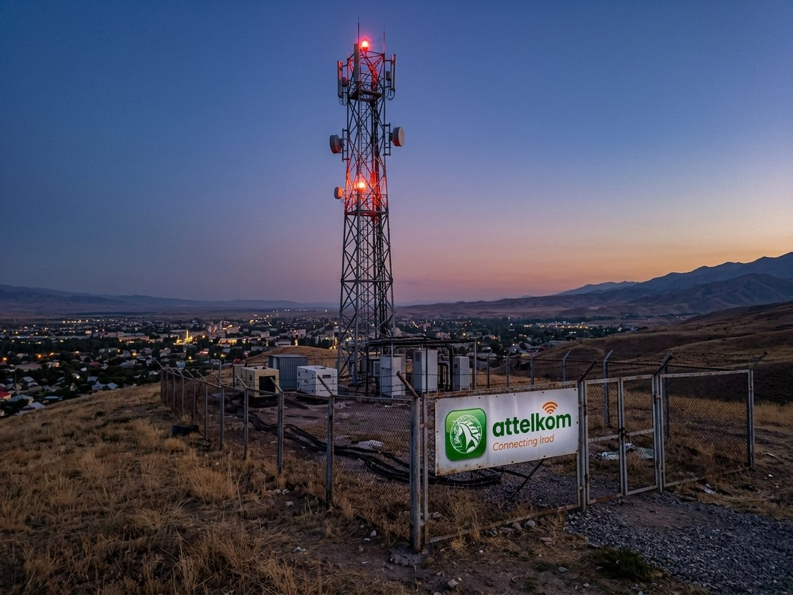

Attelkom
Fibre comes to three more microdistricts of Nurzhan in November. Check your address on attelkom.net.
♥ 46 · Comment · Share
Connecting Irad.
Claim your business page and bring your licence to any service centre for the green tick.
Fibre comes to three more microdistricts of Nurzhan in November. Check your address on attelkom.net.
♥ 46 · Comment · ShareTariffs and coverage on attelkom.net and at every service centre.
Sites, mail and a verified Biznes page
maps.attelkom.net
search.attelkom.net
Claim your business page and bring your licence to any service centre for the green tick.
Fibre comes to three more microdistricts of Nurzhan in November. Check your address on attelkom.net.
♥ 46 · Comment · ShareAttelkom Biznes is out of beta soon. Claim your business page for free.
♥ 34 · Comment · ShareAttelkom, Irad's largest telecom and internet provider since its privatisation in 1999: home internet and fibre, 4G/LTE mobile, landlines, hosting, and the services of attelkom.net (Kartalar maps, Izdöö search, Jarnama ads, Kündölük blogs and these Biznes pages). Service centres in every city.
«Аттелком», крупнейший оператор связи и интернета Ирада с 1999 года: домашний интернет, оптика, мобильная связь 4G/LTE, телефон, хостинг.
Driving licence B, no fear of heights. Tools and a car provided.
Iradi and Russian; patience with customers.
To apply: send your CV through the Message button or come to the office.

Fibre to the home
The service centre
The tower on the hillИнтернет хороший, но в выходные поддержка 105 не отвечает.
Fibre installed in two days. The router is old.